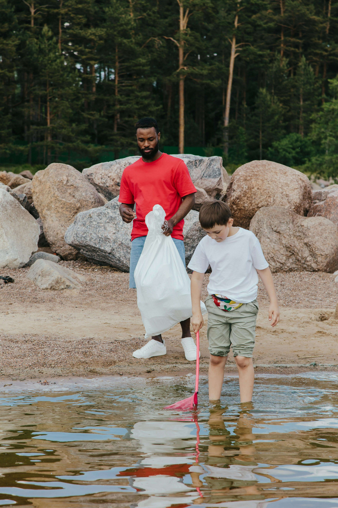

Objetivo
Reduzir a poluição plástica em ambientes costeiros e marinhos através de ações de limpeza e campanhas de sensibilização sobre o descarte correto de resíduos.
Descrição
O "Oceano Limpo, Futuro Vivo" mobiliza voluntários para a limpeza de praias e mangues, recolhendo resíduos sólidos que ameaçam a vida marinha. Complementarmente, desenvolvemos campanhas educativas em escolas e comunidades costeiras, enfatizando a redução do consumo de plásticos, a reciclagem e a economia circular.
Impacto Esperado
- Diminuição da poluição marinha.
- Proteção da fauna e flora costeira.
- Mudança de comportamento em relação ao consumo e descarte de plásticos.
